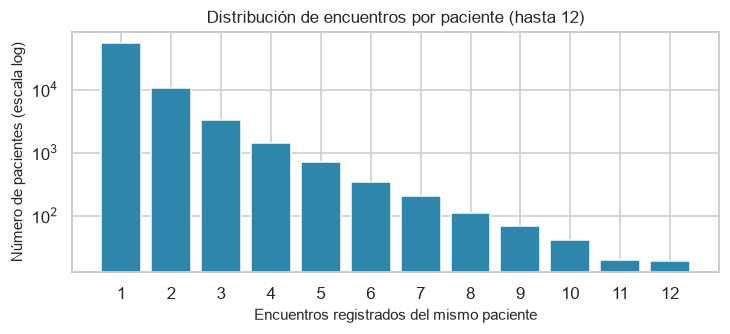
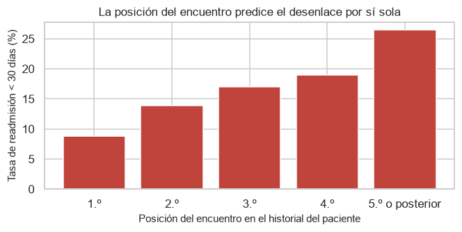
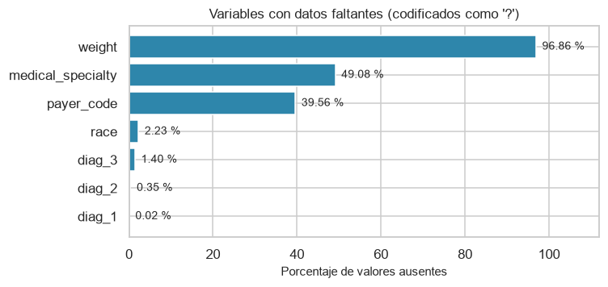
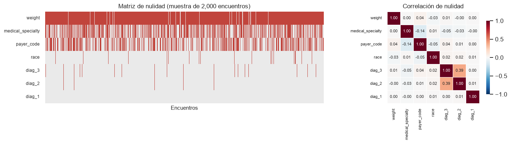

1. Dataset y Estructura#
Los pacientes diabéticos hospitalizados presentan tasas de readmisión elevadas. Cuando el reingreso ocurre dentro de los 30 días posteriores al alta, los sistemas de salud lo interpretan como un indicador de calidad asistencial, porque sugiere un alta prematura, una estabilización incompleta o una planificación deficiente del egreso. El objetivo del proyecto es predecir ese reingreso temprano con la información disponible en el momento del alta.
1.1. Dataset#
Nombre: Diabetes 130-US Hospitals for Years 1999-2008
Fuente: UCI Machine Learning Repository
Tamaño: 101,766 registros y 50 variables
Unidad de observación: el encuentro hospitalario, no el paciente
Criterios de inclusión originales: ingresos de pacientes con diagnóstico de diabetes, estancia de 1 a 14 días, con pruebas de laboratorio realizadas y medicamentos administrados durante la hospitalización
Archivo auxiliar:
IDS_mapping.csv, que traduce los tres identificadores administrativos codificados como enteros
1.2. Diccionario de variables#
El dataset contiene variables de distinta naturaleza que permiten caracterizar a los pacientes, sus antecedentes, las condiciones clínicas y el desarrollo de la hospitalización. Para organizar estas variables, se clasifican según su bloque temático o naturaleza y su función dentro del problema de aprendizaje supervisado: variables predictoras y variable objetivo.
Las variables predictoras corresponden a las características utilizadas como entradas potenciales del modelo para identificar patrones asociados al reingreso hospitalario. La variable objetivo, por su parte, representa el desenlace que se busca predecir: la readmisión del paciente dentro de los 30 días posteriores al alta.
Variable |
Descripción |
Bloque o naturaleza |
Función |
|---|---|---|---|
|
Identificador del encuentro hospitalario, asignado de forma secuencial |
Administrativa |
Predictora potencial |
|
Identificador del paciente; se repite entre encuentros del mismo individuo |
Administrativa |
Predictora potencial |
|
Raza autodeclarada |
Demográfica |
Predictora |
|
Sexo registrado |
Demográfica |
Predictora |
|
Edad agrupada en intervalos de diez años |
Demográfica |
Predictora |
|
Peso en intervalos de libras |
Clínica |
Predictora |
|
Tipo de admisión: urgencia, electiva, recién nacido, entre otros |
Administrativa |
Predictora |
|
Destino al alta: domicilio, traslado a otra institución, fallecimiento, hospicio |
Administrativa |
Predictora potencial |
|
Vía de ingreso: urgencias, remisión médica, traslado desde otro centro |
Administrativa |
Predictora |
|
Días transcurridos entre el ingreso y el alta (1 a 14 por criterio de inclusión) |
Proceso hospitalario |
Predictora |
|
Código del asegurador responsable del pago |
Administrativa |
Predictora |
|
Especialidad del médico que admite al paciente |
Administrativa |
Predictora |
|
Pruebas de laboratorio realizadas durante el ingreso |
Proceso hospitalario |
Predictora |
|
Procedimientos distintos de laboratorio realizados durante el ingreso |
Proceso hospitalario |
Predictora |
|
Medicamentos distintos administrados durante el ingreso |
Proceso hospitalario |
Predictora |
|
Consultas externas del paciente en el año previo al encuentro |
Historial clínico |
Predictora |
|
Visitas a urgencias del paciente en el año previo al encuentro |
Historial clínico |
Predictora |
|
Hospitalizaciones del paciente en el año previo al encuentro |
Historial clínico |
Predictora |
|
Diagnóstico principal, codificado en ICD-9 |
Clínica |
Predictora |
|
Diagnóstico secundario, codificado en ICD-9 |
Clínica |
Predictora |
|
Diagnóstico adicional, codificado en ICD-9 |
Clínica |
Predictora |
|
Número de diagnósticos registrados en el episodio |
Clínica |
Predictora |
|
Glucosa sérica máxima: |
Laboratorio |
Predictora |
|
Hemoglobina glicosilada: |
Laboratorio |
Predictora |
23 columnas de fármacos |
Estado de cada antidiabético durante el ingreso: |
Tratamiento |
Predictora |
|
Indica si hubo algún cambio en la medicación antidiabética |
Tratamiento |
Predictora |
|
Indica si se administró algún medicamento antidiabético |
Tratamiento |
Predictora |
|
Readmisión posterior al alta: |
Desenlace |
Objetivo |
Las 23 columnas de fármacos son metformin, repaglinide, nateglinide, chlorpropamide, glimepiride, acetohexamide, glipizide, glyburide, tolbutamide, pioglitazone, rosiglitazone, acarbose, miglitol, troglitazone, tolazamide, examide, citoglipton, insulin, glyburide-metformin, glipizide-metformin, glimepiride-pioglitazone, metformin-rosiglitazone y metformin-pioglitazone.
1.3. Variable objetivo#
La variable readmitted tiene tres niveles: <30, >30 y NO. Se derivará la variable binaria
Las readmisiones posteriores a 30 días se agrupan con los no readmitidos porque responden sobre todo a la progresión natural de una enfermedad crónica y no a la calidad del episodio analizado.
2. Lectura de datos faltantes#
El archivo usa dos convenciones distintas:
El carácter
?indica un dato ausente. Se convierte aNaN.El valor
NoneenA1Cresultymax_glu_serumindica que la prueba no se realizó. No es un dato perdido: es una decisión clínica, y como tal es informativa. Se conserva como categoría.
Por defecto pandas interpreta la cadena "None" como nulo, lo que borraría esa distinción. Se desactiva ese comportamiento con keep_default_na=False y se declara ? como único código de faltante.
crudo = pd.read_csv(
DATOS_CRUDOS / "diabetic_data.csv",
na_values=["?"],
keep_default_na=False,
low_memory=False,
)
print(f"Registros : {crudo.shape[0]:,}")
print(f"Variables : {crudo.shape[1]}")
print(f"Encuentros únicos: {crudo['encounter_id'].nunique():,}")
print(f"Pacientes únicos : {crudo['patient_nbr'].nunique():,}")
Registros : 101,766
Variables : 50
Encuentros únicos: 101,766
Pacientes únicos : 71,518
tabla(crudo.head(), filas=5)
| Loading ITables v2.9.1 from the internet... (need help?) |
| ⓘ | encounter_id | patient_nbr | race | gender | age | weight | admission_type_id | discharge_disposition_id | admission_source_id | time_in_hospital | payer_code | medical_specialty | num_lab_procedures | num_procedures | num_medications | number_outpatient | number_emergency | number_inpatient | diag_1 | diag_2 | diag_3 | number_diagnoses | max_glu_serum | A1Cresult | metformin | repaglinide | nateglinide | chlorpropamide | glimepiride | acetohexamide | glipizide | glyburide | tolbutamide | pioglitazone | rosiglitazone | acarbose | miglitol | troglitazone | tolazamide | examide | citoglipton | insulin | glyburide-metformin | glipizide-metformin | glimepiride-pioglitazone | metformin-rosiglitazone | metformin-pioglitazone | change | diabetesMed | readmitted |
|---|---|---|---|---|---|---|---|---|---|---|---|---|---|---|---|---|---|---|---|---|---|---|---|---|---|---|---|---|---|---|---|---|---|---|---|---|---|---|---|---|---|---|---|---|---|---|---|---|---|---|
| 0 | 2278392 | 8222157 | Caucasian | Female | [0-10) | NaN | 6 | 25 | 1 | 1 | NaN | Pediatrics-Endocrinology | 41 | 0 | 1 | 0 | 0 | 0 | 250.83 | NaN | NaN | 1 | None | None | No | No | No | No | No | No | No | No | No | No | No | No | No | No | No | No | No | No | No | No | No | No | No | No | No | NO |
| 1 | 149190 | 55629189 | Caucasian | Female | [10-20) | NaN | 1 | 1 | 7 | 3 | NaN | NaN | 59 | 0 | 18 | 0 | 0 | 0 | 276 | 250.01 | 255 | 9 | None | None | No | No | No | No | No | No | No | No | No | No | No | No | No | No | No | No | No | Up | No | No | No | No | No | Ch | Yes | >30 |
| 2 | 64410 | 86047875 | AfricanAmerican | Female | [20-30) | NaN | 1 | 1 | 7 | 2 | NaN | NaN | 11 | 5 | 13 | 2 | 0 | 1 | 648 | 250 | V27 | 6 | None | None | No | No | No | No | No | No | Steady | No | No | No | No | No | No | No | No | No | No | No | No | No | No | No | No | No | Yes | NO |
| 3 | 500364 | 82442376 | Caucasian | Male | [30-40) | NaN | 1 | 1 | 7 | 2 | NaN | NaN | 44 | 1 | 16 | 0 | 0 | 0 | 8 | 250.43 | 403 | 7 | None | None | No | No | No | No | No | No | No | No | No | No | No | No | No | No | No | No | No | Up | No | No | No | No | No | Ch | Yes | NO |
| 4 | 16680 | 42519267 | Caucasian | Male | [40-50) | NaN | 1 | 1 | 7 | 1 | NaN | NaN | 51 | 0 | 8 | 0 | 0 | 0 | 197 | 157 | 250 | 5 | None | None | No | No | No | No | No | No | Steady | No | No | No | No | No | No | No | No | No | No | Steady | No | No | No | No | No | Ch | Yes | NO |
tabla(crudo.tail(), filas=5)
| Loading ITables v2.9.1 from the internet... (need help?) |
| ⓘ | encounter_id | patient_nbr | race | gender | age | weight | admission_type_id | discharge_disposition_id | admission_source_id | time_in_hospital | payer_code | medical_specialty | num_lab_procedures | num_procedures | num_medications | number_outpatient | number_emergency | number_inpatient | diag_1 | diag_2 | diag_3 | number_diagnoses | max_glu_serum | A1Cresult | metformin | repaglinide | nateglinide | chlorpropamide | glimepiride | acetohexamide | glipizide | glyburide | tolbutamide | pioglitazone | rosiglitazone | acarbose | miglitol | troglitazone | tolazamide | examide | citoglipton | insulin | glyburide-metformin | glipizide-metformin | glimepiride-pioglitazone | metformin-rosiglitazone | metformin-pioglitazone | change | diabetesMed | readmitted |
|---|---|---|---|---|---|---|---|---|---|---|---|---|---|---|---|---|---|---|---|---|---|---|---|---|---|---|---|---|---|---|---|---|---|---|---|---|---|---|---|---|---|---|---|---|---|---|---|---|---|---|
| 101761 | 443847548 | 100162476 | AfricanAmerican | Male | [70-80) | NaN | 1 | 3 | 7 | 3 | MC | NaN | 51 | 0 | 16 | 0 | 0 | 0 | 250.13 | 291 | 458 | 9 | None | >8 | Steady | No | No | No | No | No | No | No | No | No | No | No | No | No | No | No | No | Down | No | No | No | No | No | Ch | Yes | >30 |
| 101762 | 443847782 | 74694222 | AfricanAmerican | Female | [80-90) | NaN | 1 | 4 | 5 | 5 | MC | NaN | 33 | 3 | 18 | 0 | 0 | 1 | 560 | 276 | 787 | 9 | None | None | No | No | No | No | No | No | No | No | No | No | No | No | No | No | No | No | No | Steady | No | No | No | No | No | No | Yes | NO |
| 101763 | 443854148 | 41088789 | Caucasian | Male | [70-80) | NaN | 1 | 1 | 7 | 1 | MC | NaN | 53 | 0 | 9 | 1 | 0 | 0 | 38 | 590 | 296 | 13 | None | None | Steady | No | No | No | No | No | No | No | No | No | No | No | No | No | No | No | No | Down | No | No | No | No | No | Ch | Yes | NO |
| 101764 | 443857166 | 31693671 | Caucasian | Female | [80-90) | NaN | 2 | 3 | 7 | 10 | MC | Surgery-General | 45 | 2 | 21 | 0 | 0 | 1 | 996 | 285 | 998 | 9 | None | None | No | No | No | No | No | No | Steady | No | No | Steady | No | No | No | No | No | No | No | Up | No | No | No | No | No | Ch | Yes | NO |
| 101765 | 443867222 | 175429310 | Caucasian | Male | [70-80) | NaN | 1 | 1 | 7 | 6 | NaN | NaN | 13 | 3 | 3 | 0 | 0 | 0 | 530 | 530 | 787 | 9 | None | None | No | No | No | No | No | No | No | No | No | No | No | No | No | No | No | No | No | No | No | No | No | No | No | No | No | NO |
resumen = pd.DataFrame({
"Variable": crudo.columns,
"Tipo de dato": crudo.dtypes.astype(str).values,
"Valores no nulos": crudo.notna().sum().values,
"Valores faltantes": crudo.isna().sum().values,
"Valores únicos": crudo.nunique().values
})
tabla(resumen, filas=15)
| Loading ITables v2.9.1 from the internet... (need help?) |
| ⓘ | Variable | Tipo de dato | Valores no nulos | Valores faltantes | Valores únicos |
|---|---|---|---|---|---|
| 0 | encounter_id | int64 | 101766 | 0 | 101766 |
| 1 | patient_nbr | int64 | 101766 | 0 | 71518 |
| 2 | race | object | 99493 | 2273 | 5 |
| 3 | gender | object | 101766 | 0 | 3 |
| 4 | age | object | 101766 | 0 | 10 |
| 5 | weight | object | 3197 | 98569 | 9 |
| 6 | admission_type_id | int64 | 101766 | 0 | 8 |
| 7 | discharge_disposition_id | int64 | 101766 | 0 | 26 |
| 8 | admission_source_id | int64 | 101766 | 0 | 17 |
| 9 | time_in_hospital | int64 | 101766 | 0 | 14 |
| 10 | payer_code | object | 61510 | 40256 | 17 |
| 11 | medical_specialty | object | 51817 | 49949 | 72 |
| 12 | num_lab_procedures | int64 | 101766 | 0 | 118 |
| 13 | num_procedures | int64 | 101766 | 0 | 7 |
| 14 | num_medications | int64 | 101766 | 0 | 75 |
| (35 more rows not shown) | |||||
tabla(
crudo
.select_dtypes(include="number")
.drop(columns=[
"encounter_id",
"patient_nbr",
"admission_type_id",
"discharge_disposition_id",
"admission_source_id"
])
.describe()
.T
.round(2),
filas=20
)
| Loading ITables v2.9.1 from the internet... (need help?) |
| ⓘ | count | mean | std | min | 25% | 50% | 75% | max |
|---|---|---|---|---|---|---|---|---|
| time_in_hospital | 101766.0 | 4.40 | 2.99 | 1.0 | 2.0 | 4.0 | 6.0 | 14.0 |
| num_lab_procedures | 101766.0 | 43.10 | 19.67 | 1.0 | 31.0 | 44.0 | 57.0 | 132.0 |
| num_procedures | 101766.0 | 1.34 | 1.71 | 0.0 | 0.0 | 1.0 | 2.0 | 6.0 |
| num_medications | 101766.0 | 16.02 | 8.13 | 1.0 | 10.0 | 15.0 | 20.0 | 81.0 |
| number_outpatient | 101766.0 | 0.37 | 1.27 | 0.0 | 0.0 | 0.0 | 0.0 | 42.0 |
| number_emergency | 101766.0 | 0.20 | 0.93 | 0.0 | 0.0 | 0.0 | 0.0 | 76.0 |
| number_inpatient | 101766.0 | 0.64 | 1.26 | 0.0 | 0.0 | 0.0 | 1.0 | 21.0 |
| number_diagnoses | 101766.0 | 7.42 | 1.93 | 1.0 | 6.0 | 8.0 | 9.0 | 16.0 |
Tres observaciones de esta primera lectura:
Trece variables son numéricas, pero tres de ellas (
admission_type_id,discharge_disposition_id,admission_source_id) son códigos categóricos.Las variables de utilización previa (
number_outpatient,number_emergency,number_inpatient) tienen mediana cero y máximos altos, patrón típico de conteos con exceso de ceros.weightaparece con cobertura mínima.
2.1. Rangos y valores imposibles#
Se verifica que ninguna variable numérica contenga valores lógicamente inadmisibles, ni códigos centinela del tipo 999 o 9999 que suelen usarse para marcar ausencias.
NUMERICAS_CRUDAS = [
"time_in_hospital", "num_lab_procedures", "num_procedures",
"num_medications", "number_outpatient", "number_emergency",
"number_inpatient", "number_diagnoses",
]
rangos = pd.DataFrame({
"mínimo": crudo[NUMERICAS_CRUDAS].min(),
"máximo": crudo[NUMERICAS_CRUDAS].max(),
"negativos": (crudo[NUMERICAS_CRUDAS] < 0).sum(),
"posibles centinelas (999 / 9999)": [
crudo[c].isin([999, 9999, 99999]).sum() for c in NUMERICAS_CRUDAS
],
})
rangos
| mínimo | máximo | negativos | posibles centinelas (999 / 9999) | |
|---|---|---|---|---|
| time_in_hospital | 1 | 14 | 0 | 0 |
| num_lab_procedures | 1 | 132 | 0 | 0 |
| num_procedures | 0 | 6 | 0 | 0 |
| num_medications | 1 | 81 | 0 | 0 |
| number_outpatient | 0 | 42 | 0 | 0 |
| number_emergency | 0 | 76 | 0 | 0 |
| number_inpatient | 0 | 21 | 0 | 0 |
| number_diagnoses | 1 | 16 | 0 | 0 |
No hay valores negativos ni códigos centinela. time_in_hospital va de 1 a 14 días, coherente con los criterios de inclusión declarados por los autores del dataset, y el resto de rangos es clínicamente plausible. A diferencia de otros conjuntos administrativos, aquí no se requiere limpieza de valores imposibles.
3. Diccionario de identificadores administrativos#
IDS_mapping.csv apila tres tablas en un solo archivo, separadas por líneas vacías.
admission_type_id: 8 códigos definidos, 0 sin descripción en los datos
discharge_disposition_id: 30 códigos definidos, 0 sin descripción en los datos
admission_source_id: 25 códigos definidos, 0 sin descripción en los datos
resumen_alta = resumen_id("discharge_disposition_id")
tabla(resumen_alta, filas=30)
| Loading ITables v2.9.1 from the internet... (need help?) |
| ⓘ | descripción | encuentros | % |
|---|---|---|---|
| discharge_disposition_id | |||
| 1 | Discharged to home | 60234 | 59.19 |
| 3 | Discharged/transferred to SNF | 13954 | 13.71 |
| 6 | Discharged/transferred to home with home health service | 12902 | 12.68 |
| 18 | NULL | 3691 | 3.63 |
| 2 | Discharged/transferred to another short term hospital | 2128 | 2.09 |
| 22 | Discharged/transferred to another rehab fac including rehab units of a hospital . | 1993 | 1.96 |
| 11 | Expired | 1642 | 1.61 |
| 5 | Discharged/transferred to another type of inpatient care institution | 1184 | 1.16 |
| 25 | Not Mapped | 989 | 0.97 |
| 4 | Discharged/transferred to ICF | 815 | 0.80 |
| 7 | Left AMA | 623 | 0.61 |
| 23 | Discharged/transferred to a long term care hospital. | 412 | 0.40 |
| 13 | Hospice / home | 399 | 0.39 |
| 14 | Hospice / medical facility | 372 | 0.37 |
| 28 | Discharged/transferred/referred to a psychiatric hospital of psychiatric distinct part unit of a hospital | 139 | 0.14 |
| 8 | Discharged/transferred to home under care of Home IV provider | 108 | 0.11 |
| 15 | Discharged/transferred within this institution to Medicare approved swing bed | 63 | 0.06 |
| 24 | Discharged/transferred to a nursing facility certified under Medicaid but not certified under Medicare. | 48 | 0.05 |
| 9 | Admitted as an inpatient to this hospital | 21 | 0.02 |
| 17 | Discharged/transferred/referred to this institution for outpatient services | 14 | 0.01 |
| 16 | Discharged/transferred/referred another institution for outpatient services | 11 | 0.01 |
| 19 | Expired at home. Medicaid only, hospice. | 8 | 0.01 |
| 10 | Neonate discharged to another hospital for neonatal aftercare | 6 | 0.01 |
| 27 | Discharged/transferred to a federal health care facility. | 5 | 0.00 |
| 12 | Still patient or expected to return for outpatient services | 3 | 0.00 |
| 20 | Expired in a medical facility. Medicaid only, hospice. | 2 | 0.00 |
La tabla de destinos al alta revela seis categorías incompatibles con una readmisión posterior: los códigos 11, 19, 20 y 21 corresponden a fallecimiento y los códigos 13 y 14 a cuidados paliativos.
tabla(resumen_id("admission_type_id"), filas=15)
tabla(resumen_id("admission_source_id"), filas=20)
| Loading ITables v2.9.1 from the internet... (need help?) |
| ⓘ | descripción | encuentros | % |
|---|---|---|---|
| admission_source_id | |||
| 7 | Emergency Room | 57494 | 56.50 |
| 1 | Physician Referral | 29565 | 29.05 |
| 17 | NULL | 6781 | 6.66 |
| 4 | Transfer from a hospital | 3187 | 3.13 |
| 6 | Transfer from another health care facility | 2264 | 2.22 |
| 2 | Clinic Referral | 1104 | 1.08 |
| 5 | Transfer from a Skilled Nursing Facility (SNF) | 855 | 0.84 |
| 3 | HMO Referral | 187 | 0.18 |
| 20 | Not Mapped | 161 | 0.16 |
| 9 | Not Available | 125 | 0.12 |
| 8 | Court/Law Enforcement | 16 | 0.02 |
| 22 | Transfer from hospital inpt/same fac reslt in a sep claim | 12 | 0.01 |
| 10 | Transfer from critial access hospital | 8 | 0.01 |
| 14 | Extramural Birth | 2 | 0.00 |
| 11 | Normal Delivery | 2 | 0.00 |
| 25 | Transfer from Ambulatory Surgery Center | 2 | 0.00 |
| 13 | Sick Baby | 1 | 0.00 |
El tipo de admisión está dominado por Emergency (53.1 %) y Elective (18.5 %), con categorías residuales de muy pocos casos como Trauma Center (0.02 %) y Newborn (0.01 %). La fuente de admisión concentra los encuentros en Emergency Room (56.5 %) y Physician Referral (29.1 %), con una cola de doce vías de ingreso por debajo del 1 % cada una (traslados entre instituciones, remisión legal, partos).
4. Calidad de datos#
4.1. Duplicados y dependencia entre observaciones#
El problema estructural más importante de este dataset no son los faltantes, sino que las filas no son independientes.
print(f"encounter_id duplicados : {crudo['encounter_id'].duplicated().sum()}")
print(f"Filas íntegramente duplicadas : {crudo.duplicated().sum()}")
encuentros_por_paciente = crudo["patient_nbr"].value_counts()
print(f"\nPacientes únicos : "
f"{crudo['patient_nbr'].nunique():,}")
print(f"Pacientes con más de un encuentro : "
f"{(encuentros_por_paciente > 1).sum():,} "
f"({100 * (encuentros_por_paciente > 1).mean():.2f} %)")
print(f"Máximo de encuentros de un paciente : {encuentros_por_paciente.max()}")
distribucion = encuentros_por_paciente.value_counts().sort_index()
fig, ax = plt.subplots(figsize=(6.8, 3.2))
ax.bar(distribucion.index[:12], distribucion.values[:12], color=PALETA[0])
ax.set_yscale("log")
ax.set_xlabel("Encuentros registrados del mismo paciente")
ax.set_ylabel("Número de pacientes (escala log)")
ax.set_title("Distribución de encuentros por paciente (hasta 12)")
ax.set_xticks(range(1, 13))
plt.tight_layout()
plt.show()
encounter_id duplicados : 0
Filas íntegramente duplicadas : 0
Pacientes únicos : 71,518
Pacientes con más de un encuentro : 16,773 (23.45 %)
Máximo de encuentros de un paciente : 40

No hay duplicación en sentido estricto: encounter_id es único y no existen filas repetidas. Pero casi uno de cada cuatro pacientes aparece más de una vez, y un paciente llega a registrar hasta 40 encuentros.
Esto tiene una consecuencia directa sobre la validación. Si los encuentros de un mismo paciente se reparten entre entrenamiento y prueba, el modelo puede memorizar rasgos del paciente concreto en lugar de aprender el mecanismo clínico, y la métrica quedaría inflada. Es fuga de información por dependencia de grupo.
Para comprobar que el riesgo es real se ordenan los encuentros de cada paciente y se calcula la tasa de readmisión según la posición del encuentro.
El dataset no incluye fechas de ingreso. Se asume que encounter_id es creciente en el tiempo, supuesto habitual en la literatura sobre este conjunto porque el identificador se asigna de forma secuencial al registrar el episodio. El supuesto afecta únicamente a cuál encuentro se conserva por paciente, no a cuántos.
posicion = crudo.sort_values("encounter_id").groupby("patient_nbr").cumcount()
tasa_por_posicion = (
crudo.assign(posicion=posicion.clip(upper=4),
y=(crudo["readmitted"] == "<30").astype(int))
.groupby("posicion")["y"].agg(["size", "mean"])
)
tasa_por_posicion.index = ["1.º", "2.º", "3.º", "4.º", "5.º o posterior"]
tasa_por_posicion.columns = ["encuentros", "tasa readmisión < 30 días (%)"]
tasa_por_posicion["tasa readmisión < 30 días (%)"] = (
100 * tasa_por_posicion["tasa readmisión < 30 días (%)"]
).round(2)
fig, ax = plt.subplots(figsize=(6.2, 3.2))
ax.bar(tasa_por_posicion.index, tasa_por_posicion["tasa readmisión < 30 días (%)"],
color=PALETA[1])
ax.set_ylabel("Tasa de readmisión < 30 días (%)")
ax.set_xlabel("Posición del encuentro en el historial del paciente")
ax.set_title("La posición del encuentro predice el desenlace por sí sola")
plt.tight_layout()
plt.show()
tasa_por_posicion

| encuentros | tasa readmisión < 30 días (%) | |
|---|---|---|
| 1.º | 71518 | 8.80 |
| 2.º | 16773 | 13.87 |
| 3.º | 6339 | 16.99 |
| 4.º | 3011 | 18.96 |
| 5.º o posterior | 4125 | 26.42 |
La tasa de readmisión temprana crece de forma monótona con el número de encuentros previos: del 9.0 % en el primer encuentro al 23.9 % a partir del cuarto. Es decir, la posición del encuentro en el historial del paciente es por sí sola un predictor fuerte del desenlace.
Un modelo entrenado con todos los encuentros y validado sin agrupar por paciente aprendería parcialmente a reconocer pacientes frecuentes ya vistos, en lugar del riesgo clínico de un paciente nuevo.
4.2. Valores faltantes#
El análisis se hace sobre los datos crudos, porque es la evidencia que fundamenta qué columnas eliminar y cómo tratar el resto.
faltantes = pd.DataFrame({
"n_faltantes": crudo.isna().sum(),
"%": (100 * crudo.isna().mean()).round(2),
}).query("n_faltantes > 0").sort_values("%", ascending=False)
fig, ax = plt.subplots(figsize=(7, 3.4))
ax.barh(faltantes.index[::-1], faltantes["%"][::-1], color=PALETA[0])
for i, valor in enumerate(faltantes["%"][::-1]):
ax.text(valor + 1.5, i, f"{valor:.2f} %", va="center", fontsize=9)
ax.set_xlim(0, 112)
ax.set_xlabel("Porcentaje de valores ausentes")
ax.set_title("Variables con datos faltantes (codificados como '?')")
plt.tight_layout()
plt.show()
faltantes

| n_faltantes | % | |
|---|---|---|
| weight | 98569 | 96.86 |
| medical_specialty | 49949 | 49.08 |
| payer_code | 40256 | 39.56 |
| race | 2273 | 2.23 |
| diag_3 | 1423 | 1.40 |
| diag_2 | 358 | 0.35 |
| diag_1 | 21 | 0.02 |
# Segunda convención: "None" indica prueba no realizada, no dato ausente.
pruebas = pd.DataFrame({
"no medida ('None') %": [
100 * (crudo["A1Cresult"] == "None").mean(),
100 * (crudo["max_glu_serum"] == "None").mean(),
],
"medida %": [
100 * (crudo["A1Cresult"] != "None").mean(),
100 * (crudo["max_glu_serum"] != "None").mean(),
],
}, index=["A1Cresult", "max_glu_serum"]).round(2)
pruebas
| no medida ('None') % | medida % | |
|---|---|---|
| A1Cresult | 83.28 | 16.72 |
| max_glu_serum | 94.75 | 5.25 |
Siete variables presentan faltantes reales, con perfiles muy distintos: weight (96.86 %), medical_specialty (49.08 %), payer_code (39.56 %), race (2.23 %) y los tres códigos diagnósticos con ausencias marginales (entre 0.02 % y 1.40 %).
La hemoglobina glicosilada no se midió en el 83 % de los encuentros y la glucosa sérica en el 95 %. Estos valores no se cuentan como faltantes, por la razón explicada en la sección 2.
4.3. ¿Son aleatorias las ausencias?#
La pregunta relevante no es cuántos faltantes hay, sino si su ausencia guarda relación con el desenlace, porque de eso depende el tratamiento correcto. Se contrasta la independencia entre el indicador de faltante y la variable objetivo.
Conviene precisar qué se está probando. Este contraste no es una prueba de MCAR: evalúa si la ausencia es independiente del desenlace. Rechazarlo es evidencia contra el supuesto de ausencia completamente aleatoria, pero no lo prueba en sentido estricto, ya que la ausencia podría depender de variables observadas. Además, con n superior a 100,000 cualquier diferencia mínima resulta significativa, de modo que se reporta también la diferencia de tasas como tamaño del efecto.
def correccion_holm(valores_p):
"""Corrección de Holm-Bonferroni para comparaciones múltiples.
Controla la tasa de error familiar de forma menos conservadora que
Bonferroni, manteniendo validez sin supuestos sobre la dependencia
entre contrastes.
Parameters
----------
valores_p : array_like
Valores p sin corregir.
Returns
-------
numpy.ndarray
Valores p ajustados, monótonos y acotados en 1.
"""
p = np.asarray(valores_p, dtype=float)
m = len(p)
orden = np.argsort(p)
ajustados = np.empty(m)
maximo = 0.0
for i, indice in enumerate(orden):
maximo = max(maximo, (m - i) * p[indice])
ajustados[indice] = min(1.0, maximo)
return ajustados
y_crudo = (crudo["readmitted"] == "<30").astype(int)
filas = []
for columna in faltantes.index:
indicador = crudo[columna].isna().astype(int)
contingencia = pd.crosstab(indicador, y_crudo)
chi2, p, _, esperadas = stats.chi2_contingency(contingencia)
# Con frecuencias esperadas pequeñas la aproximación chi² no es válida:
# se usa la prueba exacta de Fisher, apropiada en tablas 2x2.
prueba = "chi²"
if esperadas.min() < 5:
p = stats.fisher_exact(contingencia).pvalue
prueba = "Fisher exacto"
filas.append({
"variable": columna,
"% faltante": 100 * indicador.mean(),
"prueba": prueba,
"chi²": chi2,
"p": p,
"mín. frecuencia esperada": esperadas.min(),
"tasa si falta (%)": 100 * y_crudo[indicador == 1].mean(),
"tasa si está (%)": 100 * y_crudo[indicador == 0].mean(),
})
nulidad = pd.DataFrame(filas).set_index("variable")
nulidad["p (Holm)"] = correccion_holm(nulidad["p"])
nulidad["diferencia (pp)"] = (
nulidad["tasa si falta (%)"] - nulidad["tasa si está (%)"]
)
nulidad["¿independiente? (α=0.05)"] = np.where(
nulidad["p (Holm)"] > 0.05, "Sí", "No"
)
tabla(nulidad.round(4), filas=10)
| Loading ITables v2.9.1 from the internet... (need help?) |
| ⓘ | % faltante | prueba | chi² | p | mín. frecuencia esperada | tasa si falta (%) | tasa si está (%) | p (Holm) | diferencia (pp) | ¿independiente? (α=0.05) |
|---|---|---|---|---|---|---|---|---|---|---|
| variable | ||||||||||
| weight | 96.8585 | chi² | 0.0000 | 1.0000 | 356.7825 | 11.1597 | 11.1667 | 1.0000 | -0.0070 | Sí |
| medical_specialty | 49.0822 | chi² | 16.8676 | 0.0000 | 5574.2664 | 11.5738 | 10.7609 | 0.0002 | 0.8129 | No |
| payer_code | 39.5574 | chi² | 7.4393 | 0.0064 | 4492.5357 | 11.4939 | 10.9413 | 0.0255 | 0.5526 | No |
| race | 2.2336 | chi² | 19.2738 | 0.0000 | 253.6649 | 8.2710 | 11.2259 | 0.0001 | -2.9549 | No |
| diag_3 | 1.3983 | chi² | 32.5644 | 0.0000 | 158.8056 | 6.3949 | 11.2275 | 0.0000 | -4.8325 | No |
| diag_2 | 0.3518 | chi² | 3.0890 | 0.0788 | 39.9525 | 8.1006 | 11.1707 | 0.2305 | -3.0702 | Sí |
| diag_1 | 0.0206 | Fisher exacto | 2.2339 | 0.0768 | 2.3436 | 23.8095 | 11.1573 | 0.2305 | 12.6522 | Sí |
# Coincidencia de ausencias: ¿faltan las mismas filas en varias variables?
columnas_con_faltantes = faltantes.index.tolist()
indicadores = crudo[columnas_con_faltantes].isna().astype(int)
fig, axes = plt.subplots(1, 2, figsize=(13, 3.6),
gridspec_kw={"width_ratios": [2, 1]})
muestra = indicadores.sample(2000, random_state=RANDOM_STATE)
sns.heatmap(muestra.T, cbar=False, cmap=["#EAEAEA", PALETA[1]],
yticklabels=True, xticklabels=False, ax=axes[0])
axes[0].set_title("Matriz de nulidad (muestra de 2,000 encuentros)")
axes[0].set_xlabel("Encuentros")
axes[0].tick_params(axis="y", labelsize=8, rotation=0)
correlacion_nulidad = indicadores.corr()
sns.heatmap(correlacion_nulidad, annot=True, fmt=".2f", cmap="RdBu_r",
center=0, vmin=-1, vmax=1, square=True, linewidths=0.4,
annot_kws={"size": 7}, cbar_kws={"shrink": 0.8}, ax=axes[1])
axes[1].set_title("Correlación de nulidad")
axes[1].tick_params(labelsize=7)
plt.tight_layout()
plt.show()

Dos resultados relevantes.
Primero, las ausencias son en su mayoría independientes entre variables, con una excepción: diag_2 y diag_3 correlacionan en 0.39, porque los pacientes con pocos diagnósticos registrados carecen de ambos a la vez. Los demás pares son cercanos a cero, lo que descarta resumir varias ausencias con un único indicador.
Segundo, el patrón respecto al desenlace es heterogéneo. weight es el caso extremo de independencia (chi² nulo, p = 1.00): su ausencia no guarda ninguna relación con la readmisión, lo que refuerza eliminarla sin más consideraciones. medical_specialty, payer_code, race y diag_3 sí rechazan la independencia tras la corrección de Holm, aunque con efectos moderados: entre 0.55 y 4.83 puntos porcentuales de diferencia en la tasa de readmisión. diag_1 y diag_2 no rechazan.
4.4. Variables constantes y cuasi constantes#
Una variable sin varianza no aporta capacidad discriminante, encarece la codificación y puede producir columnas vacías al aplicar OneHotEncoder dentro de un fold de validación.
varianza = pd.DataFrame({
"categorías": crudo.nunique(),
"moda": crudo.apply(lambda s: s.value_counts(dropna=False).index[0]),
"% moda": (100 * crudo.apply(
lambda s: s.value_counts(dropna=False, normalize=True).iloc[0])).round(3),
})
cuasi_constantes = varianza.query("`% moda` > 95").sort_values(
"% moda", ascending=False)
tabla(cuasi_constantes, filas=20)
| Loading ITables v2.9.1 from the internet... (need help?) |
| ⓘ | categorías | moda | % moda |
|---|---|---|---|
| citoglipton | 1 | No | 100.000 |
| examide | 1 | No | 100.000 |
| glimepiride-pioglitazone | 2 | No | 99.999 |
| acetohexamide | 2 | No | 99.999 |
| metformin-pioglitazone | 2 | No | 99.999 |
| metformin-rosiglitazone | 2 | No | 99.998 |
| troglitazone | 2 | No | 99.997 |
| glipizide-metformin | 2 | No | 99.987 |
| tolbutamide | 2 | No | 99.977 |
| miglitol | 4 | No | 99.963 |
| tolazamide | 3 | No | 99.962 |
| chlorpropamide | 4 | No | 99.915 |
| acarbose | 4 | No | 99.697 |
| nateglinide | 4 | No | 99.309 |
| glyburide-metformin | 4 | No | 99.306 |
| repaglinide | 4 | No | 98.488 |
| weight | 9 | NaN | 96.858 |
Nueve fármacos superan el 95 % de concentración en una sola categoría. Siete de ellos (examide, citoglipton, acetohexamide, troglitazone, glimepiride-pioglitazone, metformin-rosiglitazone, metformin-pioglitazone) son estrictamente constantes: todos los pacientes tienen el valor No. En tolbutamide y glipizide-metformin la variación se reduce a una decena de casos, insuficiente para estimar cualquier efecto. Todos se descartan.
4.5. Cardinalidad#
Las variables con muchas categorías generan matrices dispersas al codificarse y elevan el riesgo de sobreajuste, sobre todo cuando algunas categorías tienen muy pocos casos.
categoricas_crudas = columnas_texto(crudo)
cardinalidad = pd.DataFrame({
"categorías": crudo[categoricas_crudas].nunique(),
"% moda": (100 * crudo[categoricas_crudas].apply(
lambda s: s.value_counts(normalize=True).iloc[0])).round(2),
}).sort_values("categorías", ascending=False)
tabla(cardinalidad, filas=15)
| Loading ITables v2.9.1 from the internet... (need help?) |
| ⓘ | categorías | % moda |
|---|---|---|
| diag_3 | 789 | 11.52 |
| diag_2 | 748 | 6.66 |
| diag_1 | 716 | 6.74 |
| medical_specialty | 72 | 28.24 |
| payer_code | 17 | 52.74 |
| age | 10 | 25.62 |
| weight | 9 | 41.79 |
| race | 5 | 76.49 |
| glyburide-metformin | 4 | 99.31 |
| max_glu_serum | 4 | 94.75 |
| A1Cresult | 4 | 83.28 |
| metformin | 4 | 80.36 |
| repaglinide | 4 | 98.49 |
| nateglinide | 4 | 99.31 |
| chlorpropamide | 4 | 99.92 |
| (22 more rows not shown) | ||
Los tres códigos diagnósticos concentran el problema, con entre 716 y 789 categorías cada uno. Codificarlos directamente produciría más de 2,000 columnas binarias, la mayoría con un puñado de casos. La solución estándar en la literatura sobre este dataset es agruparlos por capítulo de la clasificación ICD-9.
medical_specialty, con 72 categorías, presenta un problema más leve que se resuelve agrupando las especialidades poco frecuentes.
4.6. Valores inválidos y códigos no informativos#
Además de los faltantes explícitos, el dataset contiene categorías que equivalen a información ausente pero están codificadas como valores válidos.
print("Distribución de gender:")
print(crudo["gender"].value_counts().to_string(), "\n")
NO_INFORMATIVOS = {
"admission_type_id": [5, 6, 8], # Not Available, NULL, Not Mapped
"discharge_disposition_id": [18, 25, 26], # NULL, Not Mapped, Unknown/Invalid
"admission_source_id": [9, 15, 17, 20, 21],
}
for columna, codigos in NO_INFORMATIVOS.items():
etiquetas = [mapeos[columna][c] for c in codigos]
print(f"{columna}: {100 * crudo[columna].isin(codigos).mean():.2f} % "
f"de los encuentros — {etiquetas}")
Distribución de gender:
gender
Female 54708
Male 47055
Unknown/Invalid 3
admission_type_id: 10.22 % de los encuentros — ['Not Available', 'NULL', 'Not Mapped']
discharge_disposition_id: 4.60 % de los encuentros — ['NULL', 'Not Mapped', 'Unknown/Invalid']
admission_source_id: 6.94 % de los encuentros — [' Not Available', 'Not Available', 'NULL', ' Not Mapped', 'Unknown/Invalid']
Tres registros tienen gender igual a Unknown/Invalid. Se eliminan: el volumen es despreciable y no justifica crear una categoría.
Entre el 4.6 % y el 10.2 % de los encuentros tienen códigos administrativos equivalentes a “no disponible” o “no mapeado”. Aquí el volumen sí es relevante, de modo que no se eliminan filas: esos códigos se conservan como categoría explícita, dado que la ausencia de registro administrativo puede correlacionar con el tipo de institución o con la vía de ingreso.
5. Plan de depuración#
# |
Decisión |
Alcance |
Evidencia que la respalda |
|---|---|---|---|
1 |
Excluir altas por fallecimiento u hospicio (códigos 11, 13, 14, 19, 20, 21) |
2,423 filas |
Sección 3: el desenlace es imposible por construcción, no por riesgo clínico |
2 |
Excluir registros con |
3 filas |
Sección 4.6: volumen despreciable |
3 |
Conservar un encuentro por paciente |
~29 % de las filas |
Sección 4.1: la posición del encuentro predice el desenlace y genera dependencia entre observaciones |
4 |
Eliminar |
1 columna |
Sección 4.2: 96.9 % de faltantes; imputar generaría un valor sintético para casi toda la muestra. Su ausencia es además independiente del desenlace (sección 4.3) |
5 |
Eliminar |
1 columna |
Sección 4.2: 39.6 % de faltantes en una variable del asegurador que no describe el estado clínico |
6 |
Eliminar |
1 columna |
Identificador sin contenido clínico |
7 |
Eliminar nueve fármacos constantes o cuasi constantes |
9 columnas |
Sección 4.4: varianza nula o casi nula |
8 |
Agrupar los tres códigos ICD-9 por capítulo clínico |
3 columnas |
Sección 4.5: cardinalidad de 716 a 789 categorías |
9 |
Agrupar en |
26 columnas |
Secciones 4.5 y 4.6: las categorías con muy pocos casos desestabilizan la codificación y violan los supuestos de la prueba chi-cuadrado. |
10 |
Categoría explícita: |
2 columnas |
Sección 4.3: la ausencia no es aleatoria y es potencialmente informativa. En el caso de |
11 |
Convertir los tres identificadores administrativos a tipo categórico |
3 columnas |
Sección 2: son códigos nominales sin significado ordinal |
12 |
Derivar |
1 columna |
Sección 1.2 |
5.1. Síntesis#
Dimensión |
Hallazgo |
|---|---|
Volumen |
101,766 encuentros, 71,518 pacientes, 50 variables |
Dependencia entre filas |
23.45 % de los pacientes tiene más de un encuentro; la tasa de readmisión crece del 9.0 % al 23.9 % con la posición del encuentro |
Convenciones de faltante |
Dos distintas: |
Faltantes reales |
|
Patrón de nulidad |
Ausencias mayormente independientes entre variables, salvo |
Varianza |
Nueve fármacos constantes o cuasi constantes |
Cardinalidad |
Diagnósticos con 716 a 789 categorías; especialidad médica con 72 |
Valores inválidos |
3 registros con género inválido; entre 4.6 % y 10.2 % de códigos administrativos no informativos |
Rangos |
Sin valores negativos, imposibles ni códigos centinela |